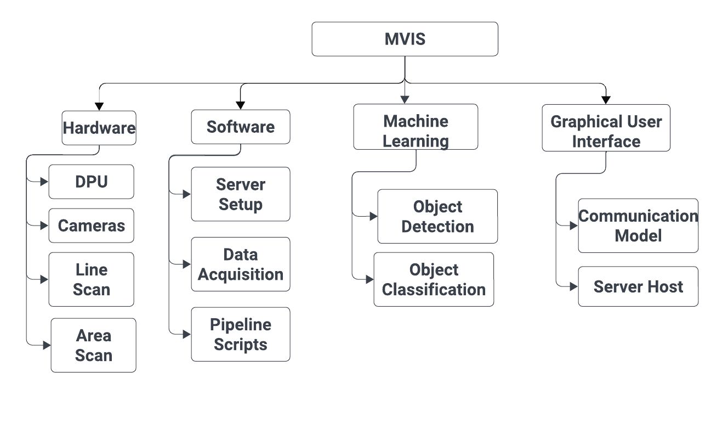

The Machine Vision Inspection System (MVIS) is a comprehensive system designed for the inspection of freight trains. It encompasses hardware components such as area scan and line-scan cameras, data processing units (DPUs), and software components including machine learning models, graphical user interface (GUI), and pipeline scripts. The system utilizes various machine learning models for the detection and classification of train components and defects, such as YOLOv8 for object detection, ResNet-50 for CNN models, and one-class classification methods for identifying anomalies.

Overall, the MVIS is a sophisticated system that integrates hardware, software, machine learning, and graphical user interface to facilitate the comprehensive inspection of freight trains, enabling efficient defect detection and maintenance procedures.